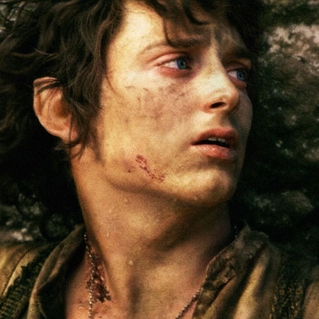
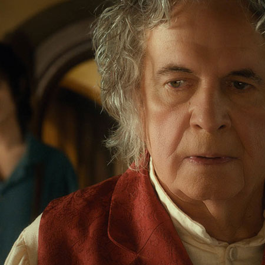
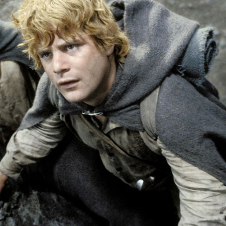
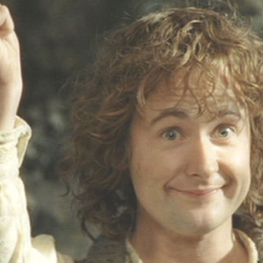
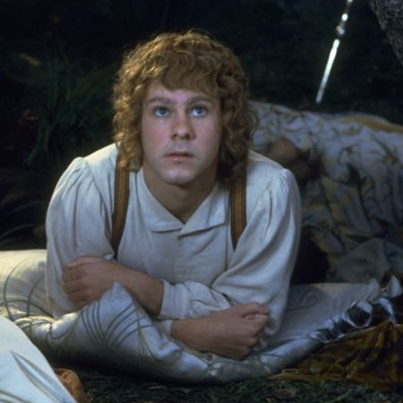

Frodo Baggins
|  | Frodo Baggins of The Shire serves as the primary protagonist to The Lord of The Rings. Indeed, he will inherit the Ring of Power from his uncle, Bilbo. Eventhough he was only set out to bring the Ring to Rivendell, at the age of 33, he will enroll in the Fellowship of the Ring as the Ringbearer and will carry it until it's destruction in the fire of Mount Doom. Oddly enough, as a Hobbit, he is particularly clever and showed a lot of resilience to the evil of the Ring, even though in the end he will surrender and almost die because of it. In the movie trilogy, this character is embodied by Elijah Woods. |
Bilbo Baggins
|  | Bilbo is the uncle of Frodo, and his part in the Lord of The Ring is huge. Indeed he is the one who stole the Ring from Gollum and who kept it for a long time before passing it to Frodo. He is an adventurous and clever Hobbit, a Baggins, and his story is described in more details in The Hobbit. After giving the Ring to Frodo, he will age quickly and most likely die during his last journey to the Immortal Lands. He is played by two different actors : Ian Holmes, as his old self, and Martin Freeman, as his young self. |
Samwise Gamgee
|  | Samwise Gamgee is one of the main characters. First known as Frodo's gardener, he will be his most faithful companions until the destruction of the Ring of Power. Part of the Fellowship of the Ring since the beginning, he will nonetheless part with it and follow Frodo into Mordor. His character, played by Sean Astin, is crucial and will save Frodo's life a countless amount of time. |
Peregrin Touque
|  | Peregrin Took is the son of Paladin. Also part of the Fellowship of The Ring, he is the youngest of all and his youth pushes him to make a lot of mistakes. He was captured by Uruk-Hais with his cousin during the battle that killed Boromir. But he will manage to escape and from this escape, he will participate in the Ents march and the destruction of Isengard. His character was acted by Billy Boyd. |
Merry
|  | Meriadoc Brandybuk is one of the companions in the Fellowship of the Ring. Often described as the most intelligent Hobbit of the Shire, he knew about the One Ring even before Bilbo found it. He was captured along with Pippin, and after their separation, he will fight side by side with Eowyn during the Battle for Minas Tirith. Dominic Monaghan played his part. |